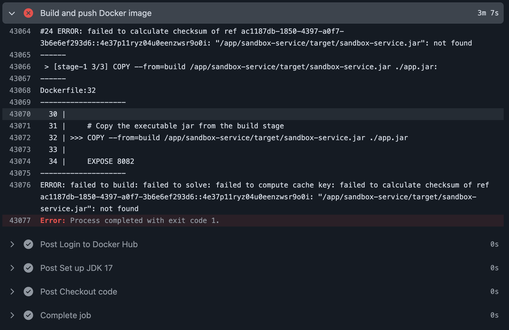
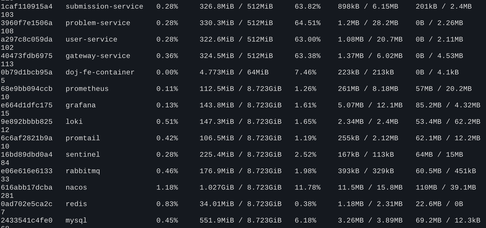
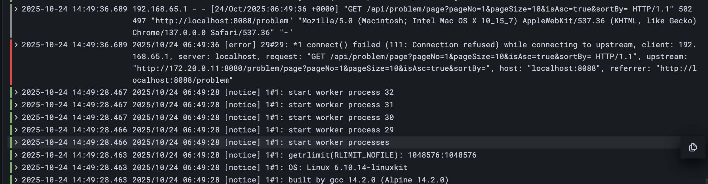

容器化部署DOJ项目时遇到的各种坑与解决方案实录，涵盖从打包、内存管理、Nginx配置到Docker-in-Docker的方方面面，帮助开发者顺利完成微服务架构的容器化转型。
第一难：打包的“薛定谔的猫”——
COPY 命令为何总是 not found？
案发现场
一切从 CI/CD 流水线开始。我信心满满地写好了所有服务的
Dockerfile，本地测试也一切正常。然而，一推送到 GitHub
Actions，构建日志就给我当头一棒：

奇怪了，target 目录里怎么会没有 .jar
文件？我本地 mvn package 明明能成功生成啊！
侦查过程
我登录到构建失败的容器环境里（或者在本地 Dockerfile 的
RUN 命令里加上
ls -l target/），终于发现了端倪。在 target
目录里，躺着的根本不是
sandbox-service.jar，而是一个带着版本号的“大胖子”——sandbox-service-1.0-SNAPSHOT.jar。
真相大白：原来，在 Spring Boot
的多模块项目中，只有在 pom.xml 的
<build> 标签里明确指定了
<finalName>，Maven
打包后才会生成一个不带版本号的、干净的 .jar
文件。我检查了一下项目，发现有些同事写的模块指定了，而另一些就忘了写。这种不一致性，导致了
Dockerfile 中的 COPY
命令在某些服务上能成功，在另一些服务上就“睁眼瞎”。
解决方案
“破案”了，解决起来就简单了。统一规范！在所有微服务的
pom.xml 中，都加上这段配置：
1 | <build> |
这样，无论版本如何迭代，我们都能确保每个服务打包后都叫
xxx-service.jar，Dockerfile
再也不会闹脾气了。
第二难：Nacos 的“神秘死亡”—— Exit Code 137 与内存“刺客”
案发现场
好不容易所有镜像都构建成功了，docker-compose up
一把梭，所有服务看起来都启动了。但没过几分钟，前端页面就全线崩溃。我赶紧
docker ps -a 一看，nacos 容器居然
Exited (137) 了！紧接着，依赖 Nacos
的其他微服务也因为心跳失败而相继“狗带”。
侦查过程
在 Linux 的世界里，退出码 137
是一个非常特殊的信号，它通常意味着 128 + 9，即进程收到了
SIGKILL (信号 9) 被强行终止。而什么情况下会触发
SIGKILL 呢？最常见的就是 OOM (Out of
Memory)，内存不足了，操作系统内核这位“老大哥”必须站出来，找一个最“胖”的进程来“祭天”，以保全大局。
我立刻用 docker stats
查看各个容器的内存占用，不看不知道，一看吓一跳：
- Nacos 自己就占了快 1GB 的内存。
- MySQL 占了 500MB+。
- 几个 Java 微服务加起来也得 1GB+。
- 再加上 Prometheus、RabbitMQ 这些“吃粮大户”……
而我的 Docker Desktop，默认只分配了 2GB 的总内存！僧多粥少，内核“刺客”第一个盯上的，自然就是最“胖”的 Nacos。

解决方案
没什么好说的，加内存！我直接把 Docker Desktop 的内存限制拉到了 4GB。重启所有服务，世界终于清静了。Nacos 再也没有“神秘死亡”了。
教训：永远不要低估一个完整的微服务全家桶对内存的渴望。在容器化部署前，docker stats
是你最好的朋友，提前评估资源，做好规划。
第三难：Nginx 的“鬼打墙”—— IP 地址的“前世今生”
案发现场
服务稳定运行后，我尝试模拟一次服务升级，我
docker-compose up -d --force-recreate gateway-service
重启了网关。结果，前端又崩了！Nginx 日志里，熟悉的
Connection Refused 再次出现。
但这次更诡异，只要我重启一下前端的 Nginx 容器，一切就又恢复正常了。这简直是“遇事不决，重启解决”的玄学翻版！
侦查过程
这个问题其实比 OOM 更经典，它暴露了 Nginx 在容器环境下作为反向代理的一个核心“缺陷”——DNS 缓存。
Nginx 的工作模式是：在启动时，它会去解析
proxy_pass http://gateway-service:8080; 中的
gateway-service，拿到一个 IP 地址（比如
172.20.0.12），然后就死心塌地地认准这个 IP 了。当
gateway-service 重启后，Docker 会给它一个新
IP（比如 172.20.0.13），但 Nginx
对此一无所知，依然痴情地敲着旧 IP 的门，自然只能吃“闭门羹”。而我重启
Nginx 容器，就等于让它重新走了一遍启动流程，拿到了新的正确
IP，所以“暂时”解决了问题。
同时，我还发现就算连接成功了，后端也总是返回
404。这是因为 Nginx 把前端的 /api/
路径前缀也一股脑地传给了后端，但后端 Controller 的路径里根本没有
/api。

解决方案
我们需要让 Nginx
“活”起来，既能动态发现服务，又能智能地重写路径。最终的完美方案是
upstream + resolver + rewrite
的黄金组合：
1 | # 1. 定义一个可以动态解析的上游服务池 |
这套组合拳，将服务发现、路径重写、代理转发的职责清晰分离，彻底根治了 Nginx 的“鬼打墙”问题。
第四难：判题沙箱的“越狱风云”——
docker.sock 的妙用
案发现场
最硬核的挑战来了。我们的 sandbox-service
需要在容器内部，去调用宿主机的
Docker，来创建用于判题的临时容器。但在容器里执行判题时，日志无情地抛出了
Mounts denied 错误。
侦查过程
这个问题被称为
“Docker-out-of-Docker”。错误的原因是，sandbox-service
容器只是一个“传话筒”，它构建的 docker run
命令最终是由宿主机的 Docker 守护进程来执行的。当我们的
Java 代码告诉守护进程：“请把 /app/static/codes/temp123
这个目录挂载到新容器里”时，守护进程一脸懵逼，因为它在宿主机的文件系统上根本找不到
/app/static/codes/temp123
这个路径，于是出于安全考虑，拒绝了这次挂载。
核心矛盾：容器内的程序，说的是“容器的语言”（容器内路径）；而宿主机的守护进程，只听得懂“宿主机的语言”（宿主机路径）。
解决方案
要解决这个矛盾，我们需要两样东西：一个“同声传译”，一个“专用电话”。
“专用电话” (
docker.sock): 这是 Unix 世界的魔法。/var/run/docker.sock是一个 Socket 文件，它就是本地 Docker 客户端和守护进程之间的通信管道。我们在docker-compose.yml里，把这个文件从宿主机挂载到sandbox-service容器内部：1
2volumes:
- /var/run/docker.sock:/var/run/docker.sock这样，容器内的
docker命令就能通过这个“电话线”，直接和宿主机上的守护进程“通话”了。“同声传译” (路径转换): 为了让守护进程听得懂，我们必须在发号施令前，把“容器语言”翻译成“宿主机语言”。
- 注入“字典”: 在
docker-compose.yml中，用${PWD}这个神兵利器，把宿主机的当前路径作为环境变量HOST_CODE_PATH注入容器。 - 实时翻译: 在
SandboxService.java中，我们写了一个convertToHostPath方法。它在执行docker run之前，会把即将用于挂载的容器内路径（如/app/static/codes/temp123），动态地替换成宿主机上的真实路径（如/home/user/D-OnlineJudge/static/codes/temp123）。
- 注入“字典”: 在
通过“专用电话”+“同声传译”这两招，sandbox-service
终于成功实现了“越狱”，可以在容器的“牢笼”里，自由地指挥外面的世界了。
结语
从本地到容器，远不止 docker build 和
docker run
那么简单。它是一场涉及网络、文件系统、进程管理和配置管理的系统性大考。这次“渡劫”虽然艰辛，但每解决一个问题，都让我们对
Docker
和微服务架构的理解更深一层。希望这篇“踩坑实录”能让你在未来的容器化之路上，少走一些弯路。